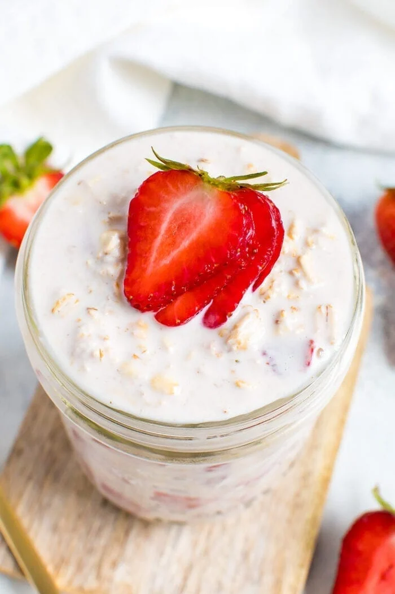

Strawberry Overnight Oats

Description
These strawberry overnight oats are so easy to meal prep and taste like strawberry shortcake! It’s like having dessert
for breakfast.
Combine the strawberry and cake flavors with the creaminess of almond milk and Greek yogurt and you’ve got yourself a
bowl of oats that tastes pretty similar to strawberry shortcake, yet still healthy enough to serve for breakfast! Plus
it’s gluten-free, portable and perfect for warm mornings when hot oats aren’t appealing.
Ingredients
- Old-fashioned rolled oats - 1 cup
- Unsweetened almond milk - 1 cup
- Greek yogurt - 1/2 cup
- Chopped Strawberries - 1 cup + a bit more for serving
- Chia seeds - 2 teaspoons
- Maple syrup - 1 teaspoon
- Sea salt - 1 pinch
Steps
- Place all ingredients in a container and stir until well combined. Seal with a lid and place in the fridge overnight (or
at least a couple hours).
- Bring out of the fridge in the morning and stir. You’ll notice that the oats soak up a lot of the liquid so you may want
to add a little more almond milk before serving. Top oats with additional chopped strawberries and serve.
- Enjoy! Overnight oats can keep for up to 5 days in the fridge in a sealed container.